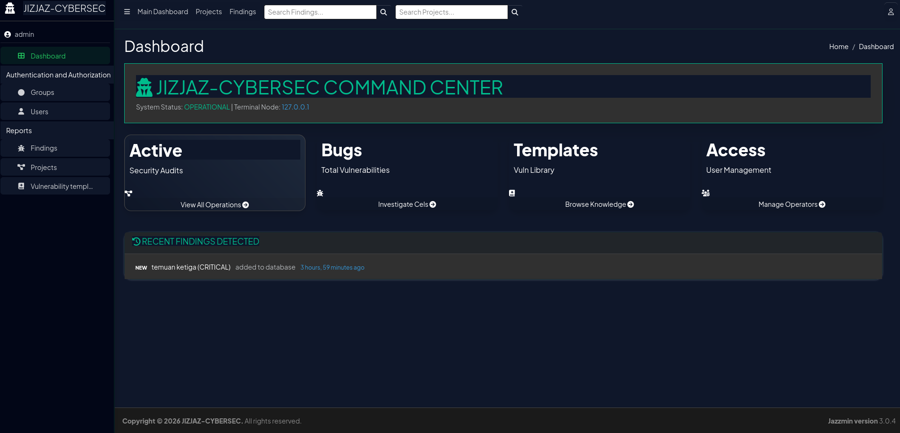
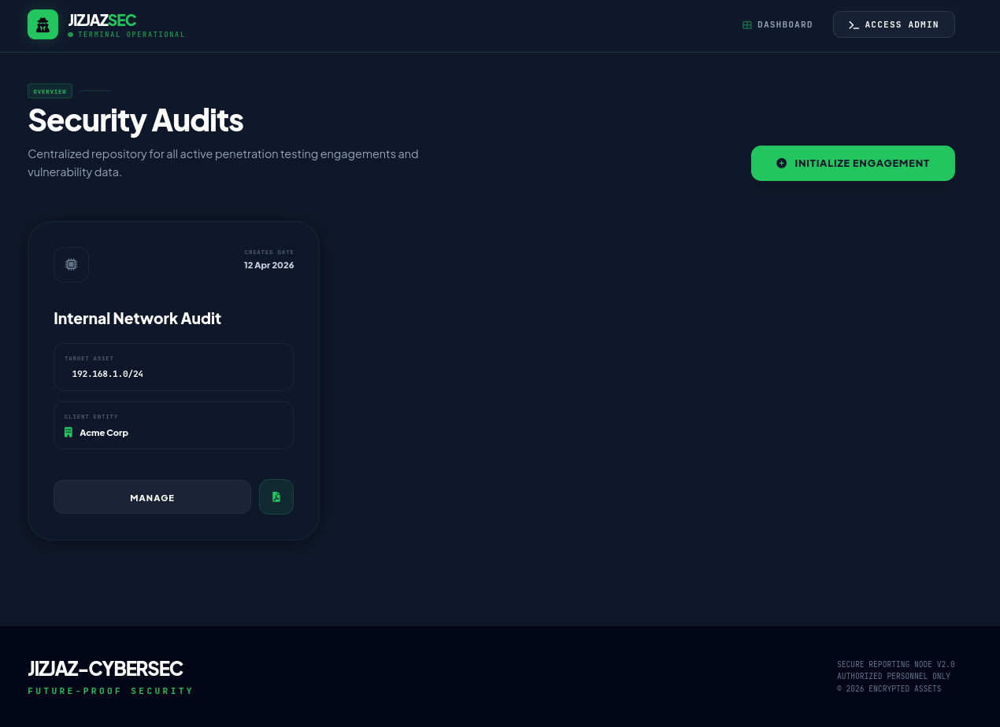
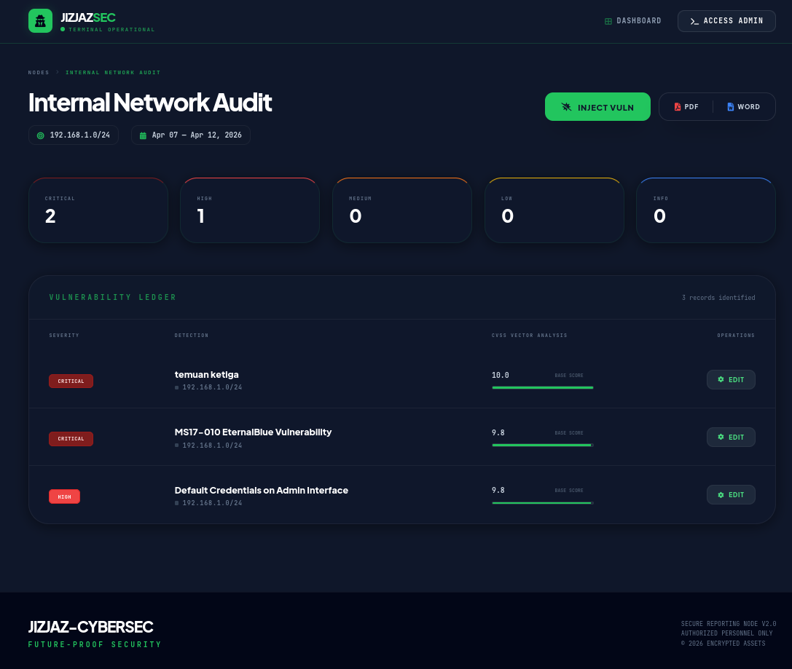
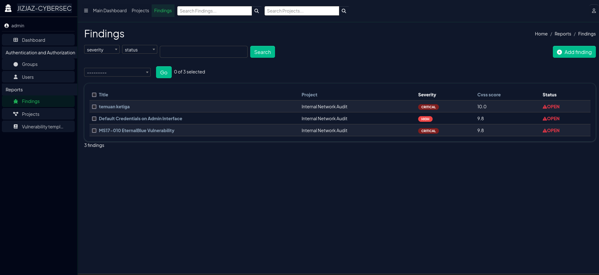
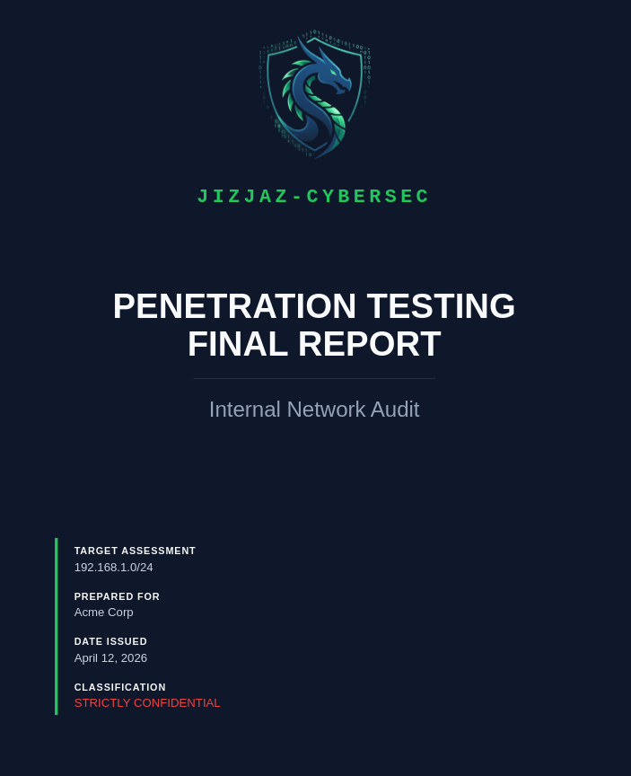
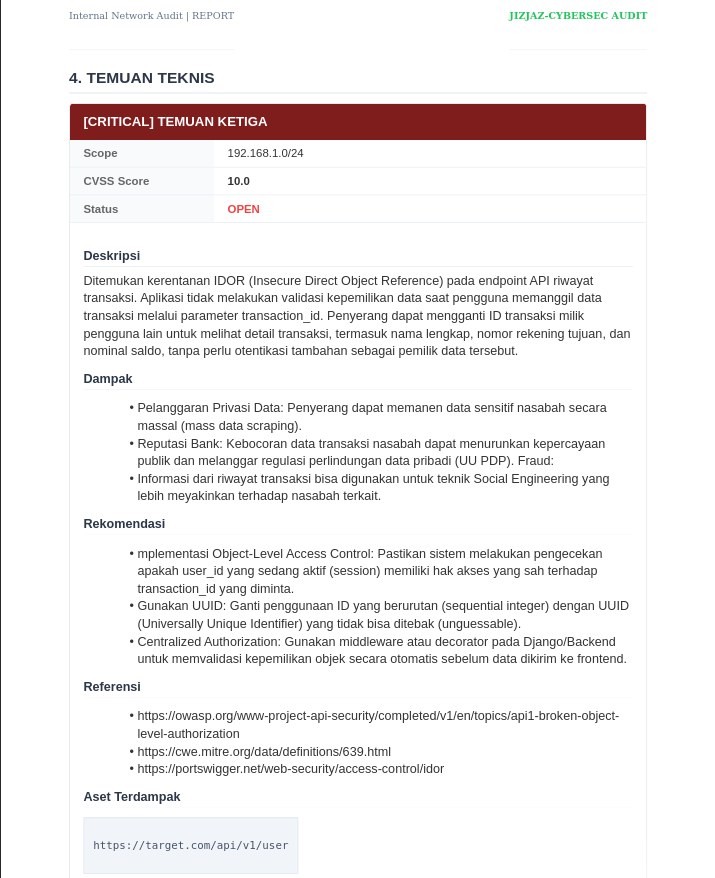

"Turning raw technical findings into executive-grade audit intelligence."
JIZJAZ-REPORT adalah platform internal eksklusif yang dirancang untuk menjamin kualitas dan kecepatan pelaporan audit. Platform ini mengotomatiskan alur kerja dari manajemen proyek hingga pembuatan dokumen final.
Dashboard admin berbasis Jazzmin yang dikustomisasi dengan skema warna Cyber-Dark. Memudahkan monitoring semua audit aktif, library temuan, dan statistik kerentanan dalam satu layar secara efisien.


Tampilan antarmuka utama yang dibangun menggunakan Tailwind CSS dengan desain yang sangat estetik. Dashboard ini berfungsi sebagai pusat navigasi untuk mengelola dan menampilkan seluruh proyek audit yang pernah dikerjakan oleh Pentester secara terorganisir.
Panel manajemen proyek yang menampilkan Vulnerability Ledger. Di sini, setiap temuan dianalisis secara mendalam berdasarkan skor CVSS v3.1 untuk menentukan tingkat risiko dan urgensi temuan secara akurat.


Fitur pengelolaan temuan yang memungkinkan penggunaan kembali template kerentanan umum dari database internal. Proses ini mempercepat penulisan laporan secara signifikan tanpa mengurangi kedalaman detail teknis pada setiap temuan yang dilaporkan.


Sistem secara otomatis menyusun laporan PDF/Docx dengan layout yang bersih, menyertakan bukti gambar (PoC), serta rekomendasi mitigasi yang komprehensif.